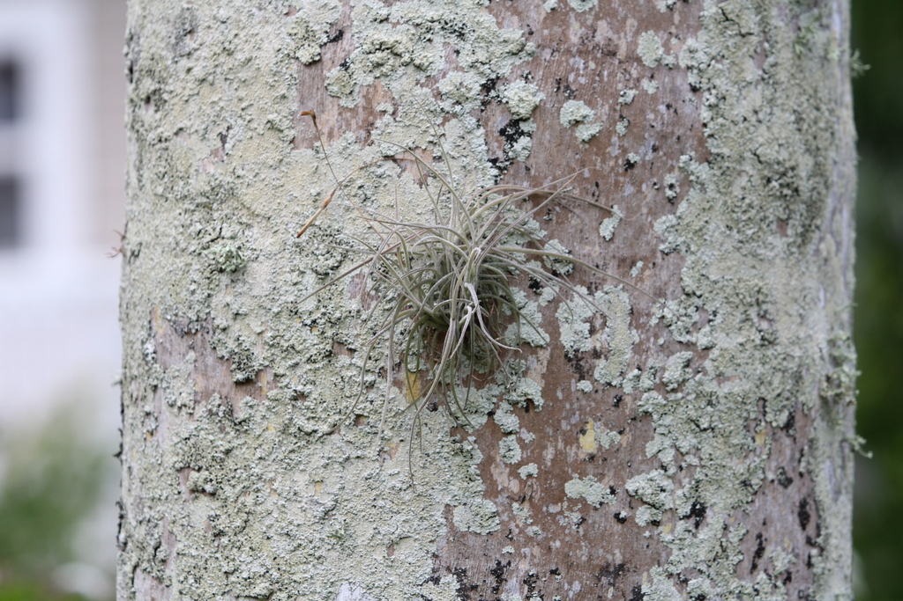

- Not a moss. Not a parasite. Ball moss is a bromeliad — a relative of the pineapple and the colorful bromeliads in the park's collection — that anchors to bark and wire using specialized root-like structures called holdfasts.
- It absorbs water and nutrients entirely from the air and rainfall. The host tree provides nothing but a perch.
- Often mistakenly removed as a pest. In healthy trees it causes no harm. Only in already-stressed or dying trees does it concentrate — because it prefers low light and poor air circulation, conditions that increase as a canopy closes or declines.
- Common throughout Central Florida on live oaks, fences, and utility wires.
Native to Florida and the southeastern and south-central United States, Mexico, Central America, the Caribbean, and South America. Member of Bromeliaceae — the bromeliad family. Related to pineapple, Spanish moss, and the ornamental bromeliads in the park.
- Ball Moss is neither a moss nor a parasite - two things worth saying plainly, because it is so often mistaken for both. It is a bromeliad, a relative of the pineapple and of the showy bromeliads sold as houseplants, that lives perched on tree branches, fences, and even power lines, gathering everything it needs from rain, dust, and air through tiny scales on its leaves.
- It uses the branch only for a foothold; it takes nothing from the tree.
- It forms small gray-green balls of curving, wiry leaves and sends up thin stalks of tiny violet flowers. Trees heavily draped with it are usually trees already in decline for other reasons - the ball moss is a symptom, not the cause, settling on the bare, sunlit branches a struggling tree leaves open.
- It is native to Florida and much of the warm Americas, and it is one of the easiest park residents to point out once people know to look up.
Provides nesting material for some small birds. The dense rosettes create microhabitats for insects and small arthropods. Ruby-throated Hummingbirds have been documented using ball moss fibers in nest construction.
Small, inconspicuous, violet, on thin stalks above the rosette. Easy to miss.
Wind-dispersed, with hair-like fibers that catch on bark and wire to establish new plants.
Dense, rounded, gray-green rosettes 3 to 8 inches across. Grows in clusters on branches and wires throughout the park.
The round gray-green rosettes on branches and wires throughout the park. Easily confused with Spanish moss at a glance — ball moss forms compact round clumps, Spanish moss forms hanging drapes.
This is an air plant, not eaten, but it's harmless — not toxic to people or dogs.

- © Cole Guyton (CC-BY-NC), via iNaturalist
- © Randall Carter (CC-BY-NC), via iNaturalist